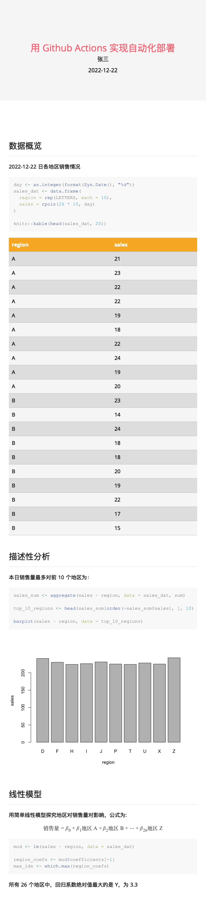

第 7 章 使用 R Markdown 开展项目工作
7.1 使用 R Markdown 在工作中管理项目
处理比较大的项目或报告时，将所有的文本和代码都放在一个 R Markdown 文档中可能会导致单个文档过大，不便于查找或者阅读。更好的方式是把它们组织成更小的单元。本节将介绍一些方法，来帮助使用者更好地组织与 R Markdown 相关的多个文件。
7.1.1 来自外部的 R 脚本
如果 R Markdown 中有大量代码，则可以考虑将一些代码放入外部 R 脚本中，并通过 source() 或 sys.source() 来运行它们，例如：
```{r, include=FALSE}
source("your-script.R", local = knitr::knit_global())
# 或 sys.source("your-script.R", envir = knitr::knit_global())
```这里 source() 设置 local 参数为 knitr 的编译环境，即 knitr::knit_global()。这可以确保脚本中定义的对象能被所有代码块正确引用。
接下来，R Markdown 文档的任意代码块都可以使用这些脚本中创建的对象（例如，数据对象或函数）。这种方法不仅可以让 R Markdown 文档更简洁，而且可以更方便地开发和调试 R 代码。
需要注意的是，上面的例子中使用了 include = FALSE，从而只执行脚本而不显示任何输出。如果想要输出，则可以删除这个块选项，或者使用第 6.2.3.1 节中的块选项来有选择地隐藏或显示不同类型的输出。
7.1.2 将外部脚本读取到一个块中
事实上，第 7.1.1 节中的 source() 方法有一个缺点：默认情况下将无法看到源代码。为了解决这个问题，可以使用 source(..., echo = TRUE)，但源代码将不会正确地突出显示语法。此外，如第 7.1.1 节中提到的那样，需要小心 source() 的 local 参数。本节将介绍一种没有上述问题的替代方法。
基本上，当有一个或多个外部脚本时，可以读取它们并将内容传递给 code 选项。code 选项可以接受一个字符向量，并将其作为代码块的内容。下面展示了几个例子。
code选项可以接受源代码形式的字符向量。例如：```{r, code=c('1 + 1', 'if (TRUE) plot(cars)')} ```也可以读取外部文件：
```{r, code=xfun::read_utf8('your-script.R')} ```可以读取任意数量的脚本：
```{r, include=FALSE} read_files <- function(files) { unlist(lapply(files, xfun::read_utf8)) } ``` ```{r, code=read_files(c('one.R', 'two.R'))} ```
也可以读取其他语言的脚本。在 R Markdown 中如何使用其他语言，请参阅 第 6.3 节。下面是关于非 R 代码的一些示例。
读取Python脚本：
```{python, code=xfun::read_utf8('script.py')} ```读取C++文件：
```{Rcpp, code=xfun::read_utf8('file.cpp')} ```
借助 code 选项，可以在任何编辑器中开发复杂的代码，并将其读到一个 R Markdown 文档的代码块中。
7.1.3 从外部脚本读取多个代码块 (*)
第 7.1.2 节介绍了一种将代码读取到单个代码块的方法。本节则将介绍一种从外部脚本中读取多个代码块的方法。该方法的关键点在于需要标记脚本中的代码，进而可以在 R Markdown 文档的代码块中使用相同的标签，所以外部脚本中的代码可以通过函数 knitr::read_chunk() 映射到代码块。若要给脚本中的代码块贴上标签，可以在 ## ---- 后面写标签，还可以在该行的末尾添加一系列破折号。一个脚本可以包含多个已被标记的代码块，例如：
## ---- test-a --------
1 + 1
## ---- test-b --------
if (TRUE) {
plot(cars)
}假设上面脚本的文件名是 test.R。在 R Markdown 文档中，可以通过 knitr::read_chunk() 来读取它，并使用带有标签的代码块中的代码，例如：
读取外部脚本：
```{r, include=FALSE, cache=FALSE}
knitr::read_chunk('test.R')
```
现在可以使用被标记的代码，即：
```{r, test-a, echo=FALSE}
```
```{r, test-b, fig.height=4}
```需要注意的是，使用 knitr::read_chunk() 时请确保调用这个函数的代码块没有被缓存（见第 6.5 节的解释）。
7.1.4 子文档 (*)
如果觉得一个 R Markdown 文档太长，可以考虑把它分成更短的文档，并通过块选项 child 将它们设置为主文档的子文档（child document）。在 child 选项中需要以字符向量的形式给定子文档的路径，例如：
```{r, child=c('one.Rmd', 'two.Rmd')}
```因为 knitr 块选项可以从任意的 R 表达式中获取值，故 child 选项的一个应用就是有条件地包含文档。例如，如果报告中有一个附录，其中包含了特定读者（如老板）可能不感兴趣的技术细节，则可以使用一个变量来控制这个附录是否包含在报告中：
如果特定读者（如老板）阅读这份报告，则将 `BOSS_MODE` 改为 `TRUE`：
```{r, include=FALSE}
BOSS_MODE <- FALSE
```
有条件地包含附录：
```{r, child=if (!BOSS_MODE) 'appendix.Rmd'}
```或者如果正在写一篇关于一场尚未发生的足球比赛的新闻报道（例如德国和巴西之间的比赛），则可以根据结果包含不同的子文档，例如，child = if (winner == 'brazil') 'brazil.Rmd' else 'germany.Rmd'。然后，一旦比赛结束，就可以立即发表报告。
另一种编译子文档的方法是函数 knitr::knit_child()。使用者可以在一个 R 代码块或一个行内 R 表达式中调用这个函数，例如：
```{r, echo=FALSE, results='asis'}
res <- knitr::knit_child('child.Rmd', quiet = TRUE)
cat(res, sep = '\n')
```函数 knit_child() 返回已编译输出的字符向量，可以使用 cat() 和块选项 results = 'asis' 来将其写回主文档。
子文档也可以作为模板，并使用不同的参数重复调用 knit_child()。下面的例子使用 mpg 作为响应变量，而 mtcars 数据中的其他变量作为解释变量进行回归：
```{r, echo=FALSE, results='asis'}
res <- lapply(setdiff(names(mtcars), 'mpg'), function(x) {
knitr::knit_child(text = c(
'## 对 `r knitr::inline_expr("x")` 跑回归',
'',
'```{r}',
'lm(mpg ~ ., data = mtcars[, c("mpg", x)])',
'```',
''
), envir = environment(), quiet = TRUE)
})
cat(unlist(res), sep = '\n')
```为了使上面的示例自成一体，上例使用 knit_child() 的 text 参数而不是文件输入来传递要编译的 R Markdown 内容。当然可以将内容写入一个文件，并将路径传递给 knit_child()。例如，可以将下面的内容保存到一个名为 template.Rmd 的文件中：
## 对 `r knitr::inline_expr('x')` 跑回归
```{r}
lm(mpg ~ ., data = mtcars[, c("mpg", x)])
```然后编译这个文件：
res <- lapply(setdiff(names(mtcars), 'mpg'), function(x) {
knitr::knit_child(
'template.Rmd', envir = environment(), quiet = TRUE
)
})
cat(unlist(res), sep = '\n')7.1.5 保留图像文件
大多数 R Markdown 输出格式默认使用选项 self_contained = TRUE。这将导致 R 的图像会直接被嵌入到输出文档中，所以在查看输出文档时不需要这些中间产物（图像文件）。因此，图像文件夹（通常带有后缀 _files）将在 R Markdown 文档编译完成后被删除。
然而，有的时候可能需要保留图像文件。例如，一些学术期刊要求作者单独提交数据文件。对于 R Markdown 来说，有三种方法可以避免自动删除这些文件：
如果输出格式支持，请使用选项
self_contained = FALSE，例如：output: html_document: self_contained: false但是，这意味着图像文件不会被嵌入到输出文档中。如果不想这样，则可以考虑下面两种方法。
为至少一个代码块启用缓存（见第 6.5 节）。当启用缓存时，R Markdown 将不会删除 plot 文件夹。
如果输出格式支持，请使用选项
keep_md = TRUE，例如：output: word_document: keep_md: true当要求 R Markdown 保存中间的 Markdown 输出文件时，它也将保存图像文件夹。
7.1.6 R 代码块的工作目录
在默认情况下，R 代码块的工作目录（working directory）是包含 R Markdown 文档的目录。例如，如果一个 R Markdown 文件的路径是 ~/Downloads/foo.Rmd，计算 R 代码块的工作目录是 ~/Downloads/。这意味着当在代码块中引用具有相对路径的外部文件时，需要知道这些路径是相对于 R Markdown 文件的目录的。例如 read.csv("data/iris.csv") 在代码块中意味着读取 CSV 文件 ~/Downloads/data/iris.csv。
当有报错或其它问题时，可以将 getwd() 添加到代码块中，编译文档，并检查 getwd() 的输出。
有的时候，可能希望使用另一个目录作为工作目录。通常改变工作目录的方法是 setwd()，但是需要注意的是，setwd() 在 R Markdown（或其他类型的 knitr 源文档）中并不是持久的，即 setwd() 仅对当前代码块有效，工作目录将在此代码块计算后恢复。
如果想改变所有代码块的工作目录，则可以通过在文档开头的 setup 代码块来设置：
```{r, setup, include=FALSE}
knitr::opts_knit$set(root.dir = '/tmp')
```这将改变所有后续代码块的工作目录。
如果使用 RStudio 来编译 R Markdown，也可以从菜单 Tools -> Global Options -> R Markdown 中选择工作目录（见图 7.1）。默认工作目录的是 R Markdown 的目录文件，并且还有另外两个可能的选择：可以使用 R 控制台的当前工作目录（选项 Current），或者使用包含这个 R Markdown 文件的项目的根目录（选项 Project）作为工作目录。
图 7.1: 在 RStudio 中改变所有 R Markdown 文档的默认工作目录。
在 RStudio 中，也可以编译一个带有特定工作目录的独立 R Markdown 文档，如图 7.2 所示。在改变 Knit Directory 并点击 Knit 按钮后，knitr 将使用新的工作目录来编译代码块。所有这些设置都可以归结为前面提到的 knitr::opts_knit$set(root.dir = ...)，所以如果不满意上述更改工作目录方式的任何一个，也可以自己用 knitr::opts_knit$set() 指定一个目录。

图 7.2: 在 R Studio 中用其它可能的工作目录编译一个 Rmd 文档。
更改工作目录各方式的选择没有哪种绝对正确，每种选择都有其优缺点：
如果使用 R Markdown 文档目录作为代码块的工作目录（knitr 的默认值），则需假定文件路径是相对于 R Markdown 文档的。这类似于 web 浏览器如何处理相对路径，例如，对于在 HTML 页面
https://www.example.org/path/to/page.html的一个图像<img src="foo/bar.png" />，web 浏览器将尝试从https://www.example.org/path/to/foo/bar.png获取图像。换句话说，相对路径foo/bar.png是相对于 HTML 文件的目录，即https://www.example.org/path/to/。这种方法的优点是，可以自由地将 R Markdown 文件与其引用的文件一起移动到任何地方，只要它们的相对位置保持不变。对于上面的 HTML 页面和图像示例，文件
page.html和foo/bar.png可以一起移动到不同的目录，如https://www.example.org/another/path/，使用者将不需要更新<img />的src属性中的相对路径。一些用户喜欢将 R Markdown 文档中的相对路径看作是“相对于 R 控制台的工作目录”，而不是“相对于 R Markdown 文件”。因此，knitr 的默认工作目录让人感到困惑。事实上，当设计者在设计 knitr 时，没有使用 R 控制台的工作目录作为默认目录的原因是，用户可以使用
setwd()随时更改工作目录。这个工作目录不能保证是稳定的。每当用户在控制台中调用setwd()时，就存在 R Markdown 文档中的文件路径可能失效的风险，因为这在 R Markdown 文件的控制之外。当考虑相对路径时，如果将 R Markdown 文件视为“宇宙的中心”，那么 R Markdown 文件中的路径可能更稳定。此外，如果不想过多地考虑相对路径，则可以使用 RStudio 的自动填充功能在 RStudio 中输入一个路径，如图 7.3 所示。RStudio 将尝试自动完成一个相对于 R Markdown 文件的路径。
使用 R 控制台的工作目录可以是一个很好的选择，可以以编程方式或交互式方式编译文档。例如，可以在循环中多次编译一个文档，并每次使用不同的工作目录来读取该目录中的不同数据文件（具有相同的文件名）。这种类型的工作目录是由 ezknitr 包 (R-ezknitr?)实现的，其本质上是使用
knitr::opts_knit$set(root.dir)来改变 knitr 中的代码块的工作目录。使用项目目录作为工作目录需要一个明显的假设：首先必须使用一个项目（例如，RStudio 项目或版本控制项目），这可能是这种方法的一个缺点。这种类型的工作目录的优点是，任何 R Markdown 文档中的所有相对路径都是相对于项目根目录的，因此不需要考虑 R Markdown 文件在项目中的位置，也不需要相应地调整其他文件的相对路径。这种类型的工作目录是由 here (Müller 2020)实现的，它提供了函数
here::here()，通过解析传递给它的相对路径来返回绝对路径（需要注意的是，相对路径是相对于项目根的）。然而，该方法的缺点是，当引用的文件和 R Markdown 文件一起移动到项目中的另一个位置时，需要更新 R Markdown 文档中的引用路径。当与其他人共享 R Markdown 文件时，也必须共享整个项目。这些类型的路径类似于 HTML 中没有协议（protocol）或域（domain）的绝对路径。例如，
https://www.example.org/path/to/page.html页面上的<img src="/foo/bar.png" />图像是指网站根目录下的图像，即https://www.example.org/foo/bar.png。图像src属性中的/表示网站的根目录。如果想了解更多关于 HTML 中绝对路径和相对路径的知识，请参阅附录 B.1 – blogdown 书 (blogdown2017?)。
工作目录之苦主要来自于处理相对路径时的这个问题： _相对于什么？_正如之前提到的，不同的人有不同的偏好，没有绝对正确的答案。
图 7.3: 在 RStudio 中自动填充 Rmd 文档中的文件路径。
7.2 使用 R Markdown 实现工作流
本节将介绍一些处理 R Markdown 文档以及运行 R Markdown 项目的技巧。在学习完本节后，可以对上述工作有初步的了解，想要更详细地了解也可以查看 R for Data Science 的第三十章 “R Markdown workflow”(H. Wickham and Grolemund 2017)，该书简要介绍了一些使用分析笔记本的技巧（包括 R Markdown 文档）。Nicholas Tierney在书R Markdown for Scientists 中也讨论了工作流。
7.2.1 使用 RStudio 键盘快捷键
R Markdown 格式可以与任何编辑器一起使用，只要安装了 R、rmarkdown 包以及 Pandoc。然而，RStudio 与 R Markdown 深度集成，所以可以在 RStudio 中利用 R Markdown 顺利地开展工作。
与任何 IDE（集成开发环境，Integrated Development Environment）一样，RStudio 也有键盘快捷键。完整的列表可以在菜单 Tools -> Keyboard Shortcuts Help 下找到。一些与 R Markdown 相关的最有用的快捷方式总结可见表 7.1。
| 任务 | Windows & Linux | macOS |
|---|---|---|
| 插入 R 块 | Ctrl+Alt+I | Command+Option+I |
| HTML预览 | Ctrl+Shift+K | Command+Shift+K |
| 编译文档（knitr） | Ctrl+Shift+K | Command+Shift+K |
| 编译Notebook | Ctrl+Shift+K | Command+Shift+K |
| 编译PDF | Ctrl+Shift+K | Command+Shift+K |
| 运行上面的所有块、 | Ctrl+Alt+P | Command+Option+P |
| 运行当前的块 | Ctrl+Alt+C | Command+Option+C |
| 运行当前的块 | Ctrl+Shift+Enter | Command+Shift+Enter |
| 运行下一个块 | Ctrl+Alt+N | Command+Option+N |
| 运行所有的块 | Ctrl+Alt+R | Command+Option+R |
| 转到下一个块/标题 | Ctrl+PgDown | Command+PgDown |
| 转到上一个块/标题 | Ctrl+PgUp | Command+PgUp |
| 显示/隐藏文档大纲 | Ctrl+Shift+O | Command+Shift+O |
| Build书、网站… | Ctrl+Shift+B | Command+Shift+B |
此外，还可以通过 Ctrl + Alt + F10（或 macOS 中的Command + Option + F10）来重新启动 R 会话。定期重新启动有助于保证结果的再现性，因为如果结果是从一个新的 R 会话计算出来的，那么其更有可能再现。这也可以通过工具栏上 Run 按钮后面的下拉菜单 Restart R and Run All Chunks 来完成。
7.2.2 R Markdown 的拼写检查
如果使用 RStudio IDE，可以按 F7 键或点击菜单 Edit -> Check Spelling 对 R Markdown 文档进行拼写检查。实时拼写检查在 RStudio v1.3 中已经可以使用了，所以在这个版本或更高版本的 RStudio 中，不再需要手动触发拼写检查。
如果不使用 RStudio，则 spelling 包 (R-spelling?)提供一个函数 spell_check_files()，可以检查常见文档格式的拼写，包括 R Markdown。当拼写检查 R Markdown 文档时，它将跳过代码块，只检查普通文本。
7.2.3 用 rmarkdown::render() 呈现 R Markdown
如果不使用 RStudio 或任何其他 IDE，则需要知道一个事实：R Markdown 文档是通过函数 rmarkdown::render() 来呈现的。这意味着可以在任何 R 脚本中以编程方式呈现 R Markdown 文档。例如，可以在 for 循环中为一个国家的每个城市呈现一系列报告：
for (city in city.name) {
rmarkdown::render(
'input.Rmd', output_file = paste0(city, '.html')
)
}这样的话，每个城市的输出文件名是不同的。还可以在文档 input.Rmd 中使用 city 变量，例如：
---
title: "`r knitr::inline_expr('city')` 的一个报告"
output: html_document
---
`r knitr::inline_expr('city')` 的面积是 `r knitr::inline_expr('city.area[city.name == city]')` 平方公里。可以阅读帮助页面 ?rmarkdown::render 以了解其他可能的参数。这里本节只提到其中两个关键的参数：clean 和 envir 参数。
当 Pandoc 转换出现任何问题时，clean 参数将特别有助于调试。如果调用 rmarkdown::render(..., clean = FALSE) ，所有中间文件将被保留，包括编译 .Rmd 文件得到的中间文件 .md。如果 Pandoc 发出错误信号，则可以从 .md 文件开始调试。
当调用 rmarkdown::render(..., envir = new.env()) 时，envir 参数可以保证空白的新环境下呈现文档，因此在代码块中创建的对象将留在该环境中，而不会影响当前的全局环境。另一方面，如果倾向于在一个新的 R 会话中呈现 R Markdown 文档，以便当前 R 会话中的对象不会影响 R Markdown 文档，则可以在 xfun::Rscript_call() 中调用 rmarkdown::render，例如：
xfun::Rscript_call(
rmarkdown::render,
list(input = 'my-file.Rmd', output_format = 'pdf_document')
)这个方法类似于点击 RStudio的 Knit 按钮，它也在可以新的 R 会话中呈现 R Markdown 文档。考虑到使用者可能需要在一个 R Markdown 文档内呈现另一个 R Markdown 文档，本书强烈建议使用者使用这种方法，而不是在代码块中直接调用 rmarkdown::render()，因为 rmarkdown::render() 会产生并依赖于其内部的很多“副产物”，这可能会影响在同一个 R 会话中呈现其他的 R Markdown 文件。
xfun::Rscript_call() 的第二个参数接受传递给 rmarkdown::render() 的参数列表。事实上，xfun::Rscript_call 是一个通用的函数，用于在新的 R 会话中调用任何 R 函数。感兴趣者可以查看它的帮助页面。
7.2.4 参数化的报告
第 7.2.3 节提到了一种在 for 循环中呈现一系列报告的方法。实际上，rmarkdown::render() 有一个叫 params 的参数，是专门为这个任务设计的。使用者可以通过这个参数来参数化其产生的报告。当为报表指定参数时，可以在报表中使用变量 params。例如，如果调用：
for (city in city.name) {
rmarkdown::render('input.Rmd', params = list(city = city))
}那么在 input.Rmd 中，params 对象会是一个包含 city 变量的列表：
---
title: "`r knitr::inline_expr('params$city')` 的一个报告"
output: html_document
---
`r knitr::inline_expr('params$city')` 的面积是 `r knitr::inline_expr('city.area[city.name == params$city]')` 平方公里。另一种为报告指定参数的方法是使用 YAML 字段 params，例如：
---
title: 参数化的报告
output: html_document
params:
city: Beijing
year: 2022
---需要注意的是，使用者可以在 YAML 字段 params 或 rmarkdown::render() 的参数 params 中包含尽可能多的参数。如果 YAML 字段 params 和参数 params 同时存在，则参数 params 中的参数值将覆盖 YAML 字段 params 中相应的参数。例如，当在前面有 YAML 字段 params 的例子中调用 rmarkdown::render(..., params = list(city = 'Shanghai', year = 2020)，则在 R Markdown 文档中，params$city 将变成 Shanghai（而不是Beijing）， params$year 将变成2020（而不是2022）
当用相同的 R Markdown 文档呈现一系列报告时，需要调整 rmarkdown::render() 的 output_file 参数，以确保每个报告都有其唯一的文件名。否则，可能将意外地覆盖某些报告文件。例如，可以编写一个函数来生成每个城市每年的报告：
render_one <- function(city, year) {
# 假设 input.Rmd 的输出格式是 PDF
rmarkdown::render(
'input.Rmd',
output_file = paste0(city, '-', year, '.pdf'),
params = list(city = city, year = year),
envir = parent.frame()
)
}之后可以使用嵌套的 for 循环来生成所有的报告：
for (city in city.name) {
for (year in 2000:2022) {
render_one(city, year)
}
}最后，可以得到一系列的报告文件，如Beijing-2000.pdf，Beijing-2001.pdf，…，Shanghai-2021.pdf，以及Shanghai-2022.pdf。
对于参数化的报告，还可以通过一个由 Shiny 创建的图形用户界面（Graphical User Interface，GUI）来交互式地输入参数。这需要在 YAML 中提供一个 params 字段，rmarkdown 将为每个参数使用适当的输入部件自动创建 GUI，例如，将为布尔（Boolean）参数提供一个复选框。
如果不使用 RStudio，也可以用 params = 'ask' 调用 rmarkdown::render() 来启动 GUI：
rmarkdown::render('input.Rmd', params = 'ask')如果使用 RStudio，则可以点击 Knit 按钮后面的菜单 Knit with Parameters。图 7.4 展示了一个参数的 GUI 示例。

图 7.4: 使用者可以从 GUI 输入的参数编译一个 R Markdown 文档。
有关参数化报告的更多信息，请阅读 R Markdown Definitive Guide 的第十五章 “Parameterized reports”(Xie, Allaire, and Grolemund 2018)。
7.2.6 通过 Google Drive 对 Rmd 文档进行协作
基于 googledrive 包 (D’Agostino McGowan and Bryan 2021)， Emily Kothe 在 rmdrive 包 中提供了一些包装函数，该包目前只能从 GitHub上获得（https://github.com/ekothe/rmdrive）。在撰写本书时，它仍然缺乏丰富的文档，所以建议尝试 Janosch Linkersdörfer 的分支：https://github.com/januz/rmdrive，该分支基于 Ben Marwick 的分支（对于尚未学会 Git 的读者，可能会被这些自由分支和改进其他人 Git 库的例子所激励）。
使用 rmdrive 进行工作的流程可被概述如下：
假设有一个项目的主要作者或贡献者，他能够使用像 Git 这样的版本控制工具。主要作者编写 R Markdown 文档的初始版本，并通过
upload_rmd()函数将其上传到 Google Drive；Google Drive 中的 R Markdown 文档可以与其他合作者共享，他们可以对 Google Document 进行更改或提出更改建议；
主要作者可以接受建议的修改，并通过
render_rmd()在本地下载或预览 R Markdown 文档。如果其他合作者有修改过的代码块，并且希望看到新的结果，他们也可以自己完成这项工作；如果满意，主作者可以将更改提交到 Git 存储库。
在 Google Drive 中，协作编辑可以是同步的，也可以是异步的。多人可以同时编辑同一文档，也可以等待其他人先完成编辑。
包中还有一个 udpate_rmd() 函数，它允许在本地编辑 R Markdown 文档，并将本地 R Markdown 文档上传到 Google Drive。事实上，使用者可能永远都不应该运行这个函数，因为它将完全覆盖 Google Drive 中的文档。主要作者需要提前警告合作者。理想情况下，所有协作者应该只在 Google Drive 中编辑文档，而不是在本地。可以通过 render_rmd() 在本地预览编辑的文档，不过需要注意的是，render_rmd() 会在呈现之前自动下载文档。
7.2.7 用 workflowr 将 R Markdown 项目组织到一个研究网站上
为了更好地完成 R Markdown 项目，有的时候使用者会想将其组织到一个网站上。workflowr 包 (R-workflowr?; workflowr2019?)可以帮助使用者用项目模板和版本控制工具 Git 组织一个（数据分析）的项目。每次对项目做出更改时，可以记录更改，workflowr 可以建立一个与项目的特定版本相对应的网站。这意味着将能够查看分析结果的完整历史记录。尽管这个包使用 Git 作为版本控制的后端，但其实并不需要真正熟悉 Git。这个包提供了 R 函数，这些函数在底层执行 Git 操作，所以只需要调用这些 R 函数即可。此外，workflowr 自动化了可重复性代码的最优方法。每次 R Markdown 文档被呈现时，workflowr 会自动使用 set.seed() 设置一个种子，使用 sessionInfo() 记录会话信息，并扫描绝对文件路径等。请参阅workflowr 包的文档来了解如何开始并获取更多信息。
workflowr 的主要作者 John Blischak 也整理了一个与 R 项目工作流相关的 R 包和指南的非详尽列表，可见 GitHub 仓库： https://github.com/jdblischak/r-project-workflows。
7.2.8 使用 GitHub Actions 实现自动化部署
使用 R Markdown 输出特定的文件格式后，一个自然的问题是如何与他人共享结果，一些使用场景包括在公司内部发布数据分析报告，发表 blogdown 博客，更新 bookdown 电子书籍等。最直接的做法是在本地执行编译，随后分享输出文件。例如执行在控制台 rmarkdown::render() 函数后，上传更新后的 HTML 文件到网络服务器上，或者在 Github 中上传 Markdown 文件。本地手动编译不仅需要重复的人力劳动，如果输出结果依赖于特定的系统环境，也难以保证结果的可重复性。为了使部署过程更高效可靠，包括 Github Actions, Gitlab Pipeline 等在内的持续集成 (continuous integration) 工具被广泛应用在 R Markdown 工作流的自动化部署中。本节以 Github 平台的 Github Actions 为例讲解 R Markdown 的自动化部署方法。
尽管 Github Actions 持续集成工具的用途非常广泛，具体在 R Markdown 的语境内，读者可以把它想象为一系列执行 R Markdown 编译的指令，可以是终端的 shell 命令，也可以调用 R 语言或任意工具的命令行接口。用户可以自行定义这些指令的触发条件，例如每周一上午十点运行一次，或每次 Github 仓库有新的代码提交时运行。当这些条件被触发时，Github 会创建一个专属的虚拟环境运行定义好的代码，其中便可以包括用于发布 R Markdown 输出文档的命令。
新建任意项目目录，在其中创建 index.Rmd 文件，包含如下内容:
---
title: "用 Github Actions 实现自动化部署"
author: "张三"
date: "`r Sys.Date()`"
output:
prettydoc::html_pretty:
theme: leonids
highlight: github
---
## 数据概览
`r Sys.Date()` 日各地区销售情况
```{r}
day <- as.integer(format(Sys.Date(), "%d"))
sales_dat <- data.frame(
region = rep(LETTERS, each = 10),
sales = rpois(26 * 10, day)
)
knitr::kable(head(sales_dat, 20))
```
## 描述性分析
本日销售量最多对前 10 个地区为：
```{r}
sales_sum <- aggregate(sales ~ region, data = sales_dat, sum)
top_10_regions <- head(sales_sum[order(-sales_sum$sales), ], 10)
barplot(sales ~ region, data = top_10_regions)
```
## 线性模型
用简单线性模型探究地区对销售量对影响，公式为:
$$
销售量 = \beta_o + \beta_1地区A + \beta_1地区B + \cdots + \beta_1地区Z
$$
```{r}
mod <- lm(sales ~ region, data = sales_dat)
region_coefs <- mod$coefficients[-1]
max_idx <- which.max(region_coefs)
```
所有 `r length(unique(sales_dat$region))` 个地区中，回归系数绝对值最大的是 `r LETTERS[max_idx]`，为 `r region_coefs[max_idx]` 本地编译结果如下 (需要安装 prettydoc (Qiu 2021) 包)：

本地验证代码运行无误后，开始设置自动化部署。首先在 Github 上新建对应的仓库，在本地目录下 git init 初始化 git 并 git remote add origin <url> 添加该仓库。希望实现的效果为，每次更新 main 分支后，Github Actions 自动编译 index.Rmd 并更新至仓库对应的 Github Pages 网页端。
Github Actions 使用 yaml 文件定义命令，在根目录下新建 .github/workflows/deploy.yml 文件。
此时文档结构为：
├── .github
│ └── workflows
│ └── deploy.yml
└── index.Rmd其中，.github/workflows/ 是固定的前缀路径，Github 在此路径下搜索 yaml 文件，每个文件称为一个 workflow，不同的 workflow 通常代表自动化部署的不同任务，例如有的负责获取数据，有的负责更新网页。deploy.yml 是本案例使用的唯一 workflow 文件，名称可以自定义，其中内容为：
on:
push:
branches: main
name: Render
jobs:
render:
name: Render index.Rmd
runs-on: macOS-latest
steps:
- uses: actions/checkout@v2
- uses: r-lib/actions/setup-r@v2
- uses: r-lib/actions/setup-pandoc@v1
- name: Install rmarkdown
run: Rscript -e 'install.packages(c("rmarkdown", "prettydoc"))'
- name: Render index.Rmd
run: Rscript -e 'rmarkdown::render("index.Rmd")'
- name: Commit results
run: |
git add index.html
git commit -m 'Re-build index.Rmd'
git push originon 定义了该 workflow 的触发条件，这里为 main 分支收到新提交 (push) 时触发。它的语法通常包括动作与分支，例如 “main 和 release 分支收到 pull request 时触发” 可以表示为
on:
pull_request:
# 可包含多个触发分支
branches:
- main
- releases。on 还支持 cron 语法，例如
# 每天 5:30 and 17:30 UTC 触发 workflow
on:
schedule:
- cron: '30 5,17 * * *'name 代表 Github 网页端显示的 workflow 名称。
jobs 是 workflow 中的核心内容，代表需要执行的一系列指令，可以分为不同的子任务，该文件中包含一个 render 子任务，指定运行环境为 macOS-latest，其他可选环境包括 windows，linux 等不同版本的机型。render 中的每一项代表一组独立的指令。由于每次 workflow 触发时均运行在全新的环境中，必须重新安装项目所需的依赖项，前三个 uses 指令是 Github 社区提供的模版，分别在环境中克隆所需的仓库，安装 R 和安装 pandoc。
# 预定义模版搜索 https://github.com/marketplace?type=actions
- uses: actions/checkout@v2
- uses: r-lib/actions/setup-r@v2
- uses: r-lib/actions/setup-pandoc@v1随后，两个自定义的终端命令为
- name: Install rmarkdown
run: Rscript -e 'install.packages(c("rmarkdown", "prettydoc"))'
- name: Render index.Rmd
run: Rscript -e 'rmarkdown::render("index.Rmd")'name 定义该步骤的 UI 名称, run 代表该步骤执行的 shell 命令，这两步安装了 rmarkdown 和 prettydoc 包，并编译 index.Rmd。Rscript 是 R 提供的命令行接口，另外一种写法是：
- name: Install rmarkdown
shell: Rscript {0}
run: |
install.packages(c("rmarkdown", "prettydoc"))最后，workflow 需要把虚拟环境中生成的输出文件同步到主仓库中。这样，每次 main 分支收到更新，Github Actions 便会重新编译 index.Rmd 文档，同步输出文件 index.html 至仓库，实现自动化编译。
# 同步输出文件至仓库
- name: Commit results
run: |
git add index.html
git commit -m 'Re-build index.Rmd'
git push origin案例的最后一步是启动 Github Pages 服务，该服务将自动识别仓库内的 index.html 文件，基于个人 Github 账号生成公开的网页地址。启动方法为点击仓库的 settings -> pages 并选择 Source 为 main 分支下的 root 目录。
图 7.5: 为仓库启用 Github Pages，生成地址见 https://qiushiyan.github.io/rmd-ci/
真实生产环境中，应使主文档 index.Rmd 尽可能简洁抽象，可以运用 7.1.4 节学习的子文档知识，将业务逻辑封装为函数放入子文档 functions.Rmd 中，functions.Rmd 的内容为:
```{r, include=FALSE}
fetch_sales_data <- function(date = Sys.Date()) {
day <- as.integer(format(date, "%d"))
sales_dat <- data.frame(
region = rep(LETTERS, each = 10),
sales = rpois(26 * 10, day)
)
sales_dat
}
top_n_regions <- function(sales_dat, n) {
sales_sum <- aggregate(sales ~ region, data = sales_dat, sum)
head(sales_sum[order(-sales_sum$sales), ], n)
}
```随后在主文档 index.Rmd 中引用子文档:
```{r, child = "template.Rmd", include = FALSE}
```
```{r}
sales_dat <- fetch_sales_data()
knitr::kable(head(sales_dat, 20))
```
```{r}
top_10_regions <- top_n_regions(sales_dat, 10)
barplot(sales ~ region, data = top_10_regions)
```读者可以在 Github Actions 文档 学习更多语法知识，此外 rlib/actions 仓库汇集了诸多 R 社区为各项自动化任务定制的 workflow 文件，大部分情况下可以直接复制使用，或仅需要修改少量配置。